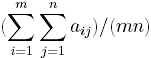

Home Page
F.A.Qs
Statistical Charts
Past Contests
Scheduled Contests
Award Contest
| Online Judge | Problem Set | Authors | Online Contests | User | ||||||
|---|---|---|---|---|---|---|---|---|---|---|
| Web Board Home Page F.A.Qs Statistical Charts | Current Contest Past Contests Scheduled Contests Award Contest | |||||||||
|
Language: The Constraint Densest Submatrix
Description Given an m x n matrix A = [aij ], the objective of the problem is to find a (consecutive) submatrix of A with size at least R rows and at least C cloumns such that the average value of the numbers in the submatrix is maximized.
Let A = [aij ] be an m x n matrix. Then a p x q matrix B = [bij ] is a (consecutive) submatrix of A if there exists a fixed ordered pair (K,L) such that bij = ai+K,j+L for each (i; j) pair; note that 1<= i<= p and 1<= j<= q. For example, The density of an m x n matrix A= [aij] is the average value of all elements of A. That is,.Note that finding the densest submatrix of a given matrix is easy. It is just the largest element within the matrix. On the other hand, the problem becomes interesting when we are asked to find the submatrix with at least R rows and at least C columns such that the density of the submatrix is maximized. Write a program to find the densest submatrix of A with size at least R x C. Input Several sets of integral matrices. The inputs are just a list of integers. Within each set, the first 4 integers (in a single line) represent the size of the matrix, m and n, indicating an m n matrix, and the constrained submatrix size, R and C. Note that each of them (m; n; R;C), can be as large as 200. After the four integers, there will be m lines representing the m rows of the matrix; each line (row) contains exactly n integers which are the elements in the row. The value of each element in a matrix is in the range from 0 to 800 and most of them are less than 100. Thus, there are totally mn integers for the particular matrix.
These matrices will occur repeatedly in the input as the pattern described above. An integer m = 0 (zero) signifies the end of input. Output For each matrix of the input, find the densest submatrix with size at least R rows and C columns. Output the submatrix by specifying the upper left corner and the lower right corner by printing four indices. For example, a line
r1 c1 r2 c2 represents a submatrix with the upper left corner (r1, c1) and the lower right corner (r2, c2). Output a single star `*' to signify the end of outputs. For the uniqueness of the answer, if two submatrices have the same density, only print the matrix whose four indices of corners (r1, c1, r2, c2) with smaller lexicographical order. For example, if the two sets of indices are (4, 3, 18, 9) and (7, 1, 14, 8), then just output the first submatrix since its indices of the corners has smaller lexicographical order. Sample Input 3 4 2 1 150 500 150 800 1 200 100 300 400 800 80 400 4 2 3 2 400 800 200 500 100 200 600 600 0 Sample Output 1 4 2 4 1 1 4 2 * Hint A brute force algorithm will lead to Time Limit Exceed. Source |
[Submit] [Go Back] [Status] [Discuss]
All Rights Reserved 2003-2013 Ying Fuchen,Xu Pengcheng,Xie Di
Any problem, Please Contact Administrator